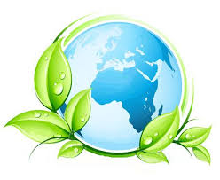

Dia Internacional de la madre Tierra 22 de abril

- 
Realizado por:
García García Luz Verónica
4° "H"
Especialidad:
Programación
Submódulo:
Desarrolla Aplicaciones Móviles
Docente
Lic.Jóse Antonio Gómez Hernández
4° "H"
Desarrolla Aplicaciones Móviles
Lic.Jóse Antonio Gómez Hernández
Celebramos el Día Internacional de la Madre Tierra para recordar que el planeta y sus ecosistemas nos dan la vida y el sustento. Con este día, asumimos, ademas, la responsabilidad colectiva, como nos recordaba la Declaración de Río de 1992, de fomentar armonía con la naturaleza y la Madre Tierra. Este día nos brinda también la oportunidad de concienciar a todos los habitantes del planeta acerca de los problemas que afectan a la Tierra y a las diferentes formas de vida que en él se desarrollan.
4° "H"
Desarrolla Aplicaciones Móviles
Lic.Jóse Antonio Gómez Hernández
El origen de esta celebración comenzó en 1970, cuando 20 millones de norteamericanos comenzaron a manifestarse por un medio ambiente sano y sustentable. Fue en 2009 cuando la Organización de las Naciones Unidas declaró el 22 de abril como el Día Mundial de la Madre Tierra. Este año, la celebración está dedicada a llevar a cabo nuevas acciones en la lucha contra el Cambio Climático.
La Tierra y sus ecosistemas son nuestro hogar. Para alcanzar un justo equilibrio entre las necesidades económicas, sociales y ambientales de las generaciones presentes y futuras, es necesario promover la armonía con la naturaleza y el planeta. Madre Tierra es una expresión común utilizada para referirse al Planeta Tierra en diversos países y regiones, lo que demuestra la interdependencia existente entre los seres humanos, las demás especies vivas y el planeta que todos habitamos.
4° "H"
Desarrolla Aplicaciones Móviles
Lic.Jóse Antonio Gómez Hernández
El Diálogo se realizó con el objetivo de inspirar a los ciudadanos y las sociedades a reconsiderar la relación que mantienen con la naturaleza, acorde a la meta 12.8 de los Objetivos de Desarrollo Sostenible con respecto a los patrones de consumo y producción sostenibles.
En concreto, tal y como anunciaron los responsables de estas ONG durante la presentación de Un programa por la Tierra. Demandas para una legislatura sostenible, lo que defienden con estas 17 propuestas es lograr que la «sostenibilidad del modelo económico, las políticas centradas en la justicia social y ambiental y las medidas para generar un nuevo modelo de producción y consumo, con generación de empleo ligado al cuidado y mejora ambiental» marquen el camino en la nueva etapa política.